Code
library(dplyr)
library(tidyr)
library(ggplot2)
library(purrr)
library(tibble)
library(readr)
library(rlang)
library(knitr)Supplement 4 applied the reconstruction comparison to Danish Neolithic site data. This supplement repeats the empirical comparison on a second dataset, Hallstatt/Iron Age burials with phase assignments.
The purpose is again methodological:
How strongly do standard aoristic, Monte Carlo, phase-corrected and Bayesian reconstructions differ when applied to empirical phase-labelled archaeological observations?
The input data differ from the Danish case. Observations are assigned to named phases, whose start and end dates come from a separate lookup table.
Because the true generating process is unknown, we do not evaluate the methods against ground truth. Instead, we compare:
We ask in particular whether the reconstructed pattern is stable across methods or shaped by the chronological classification.
The Baorista fits for the four priors are computed with scripts/run_s5_baorista_sensitivity.sh (make refresh-s5-baorista), and this document reads their posterior summaries from outputs/. The full reproduction workflow is described in the README.
library(dplyr)
library(tidyr)
library(ggplot2)
library(purrr)
library(tibble)
library(readr)
library(rlang)
library(knitr)set.seed(42)
dir.create("outputs", showWarnings = FALSE, recursive = TRUE)
dir.create("figures", showWarnings = FALSE, recursive = TRUE)
source("R/aoristic_helpers.R")
input_file <- "../data/hallstatt.tab"
phase_range_file <- "../data/hallstatt_phase_ranges.csv"
time_min <- -780L
time_max <- -451L
year_grid <- seq(time_min, time_max, by = 1)
bin_width <- 10L
n_mc <- 100L
max_interval_width <- Inf
baorista_rates <- c(1, 10, 50, 100)
baorista_reference_rate <- 1
baorista_file <- function(rate, suffix) {
file.path("outputs", paste0("s5_hallstatt_baorista_rate_", rate, "_", suffix))
}
baorista_posterior_files <- setNames(
vapply(baorista_rates, baorista_file, suffix = "posterior_binned.csv",
FUN.VALUE = character(1)),
baorista_rates
)
baorista_diagnostics_files <- setNames(
vapply(baorista_rates, baorista_file, suffix = "diagnostics.csv",
FUN.VALUE = character(1)),
baorista_rates
)
method_colours <- c("Standard aoristic" = "#D55E00",
"Monte Carlo mean" = "#0072B2",
"Phase-corrected" = "#009E73",
"Baorista posterior median" = "#CC79A7")
method_linetypes <- c("Standard aoristic" = "solid",
"Monte Carlo mean" = "longdash",
"Phase-corrected" = "solid",
"Baorista posterior median" = "dotdash")The Hallstatt/Iron Age dataset derives from the PhD dissertation by N. Müller-Scheeßel (2013) that dealt with the graves of the Hallstatt period in Southwestern and Southern Germany. The data are available at the repositorium of Tübingen University and the Zenodo account of Christoph Rinne, Kiel.
The reduced dataset (hallstatt.tab) consists of two tab-separated columns:
The chronological ranges for these phase labels are stored separately in hallstatt_phase_ranges.csv. They are taken from the same source (Müller-Scheeßel 2013).
if (!file.exists(input_file)) stop("Input file not found: ", input_file)
if (!file.exists(phase_range_file)) stop("Phase-range file not found: ", phase_range_file)
raw_iron_age <- read_tsv(input_file, col_names = c("id", "phase"),
show_col_types = FALSE)
phase_ranges <- read_csv(phase_range_file, show_col_types = FALSE)
required_phase_cols <- c("phase", "start", "end")
if (!all(required_phase_cols %in% names(phase_ranges))) {
stop("Phase-range file must contain columns: ",
paste(required_phase_cols, collapse = ", "), "\nAvailable columns: ",
paste(names(phase_ranges), collapse = ", "))
}
input_settings <- tibble(
setting = c("input_file", "phase_range_file", "time_min", "time_max",
"bin_width", "max_interval_width", "n_mc"),
value = c(input_file, phase_range_file, as.character(time_min),
as.character(time_max), as.character(bin_width),
as.character(max_interval_width), as.character(n_mc))
)
write_csv(input_settings, "outputs/s5_hallstatt_input_settings.csv")The raw data are joined to the phase-range lookup table. The lookup table stores archaeological start and end dates. To keep the rest of the workflow consistent with the previous supplements, intervals are then converted to half-open form [start, end) by adding one year to the stored end date.
For example, a phase range from -780 to -721 becomes the half-open interval [-780, -720).
unmatched_phases <- raw_iron_age |>
distinct(phase) |>
anti_join(phase_ranges, by = "phase") |>
arrange(phase)
if (nrow(unmatched_phases) > 0) {
stop(
"The following phase labels are missing from the phase-range lookup table:\n",
paste(unmatched_phases$phase, collapse = "\n")
)
}
iron_age_events <- raw_iron_age |>
left_join(
phase_ranges |>
select(phase, start_raw = start, end_raw = end, interval_width_raw = interval_width),
by = "phase"
) |>
mutate(start = as.integer(start_raw), end = as.integer(end_raw) + 1L,
interval_width = end - start) |>
filter(is.finite(start), is.finite(end), end > start, end > time_min,
start < time_max + 1L) |>
mutate(start = pmax(start, time_min), end = pmin(end, time_max + 1L),
interval_width = end - start) |>
filter(end > start, interval_width <= max_interval_width)
if (nrow(iron_age_events) == 0) {
stop("No valid intervals remain after clipping to the analysis window.")
}
write_csv(iron_age_events, "outputs/s5_hallstatt_prepared_events.csv")There are 2,242 entries altogether. Dating precision varies by a factor of 8 within this catalogue. The narrowest intervals cover 40 years, the widest 330, and the median sits at 120. Across the retained observations there are 13 distinct intervals in total.
A 40-year interval and a 330-year interval enter the sum with the same total weight. The shape of the reconstruction therefore depends on how many intervals of each width happen to exist, and not only on how many burials do.
data_summary <- tibble(
metric = c("Number of records in raw data",
"Number of records after filtering",
"Share of raw records retained", "Earliest retained start",
"Latest retained end", "Median interval width",
"Minimum interval width", "Maximum interval width",
"Number of unique retained intervals",
"Number of unique retained phase labels"),
value = c(nrow(raw_iron_age), nrow(iron_age_events),
round(nrow(iron_age_events) / nrow(raw_iron_age), 3),
min(iron_age_events$start, na.rm = TRUE),
max(iron_age_events$end, na.rm = TRUE) - 1L,
median(iron_age_events$interval_width, na.rm = TRUE),
min(iron_age_events$interval_width, na.rm = TRUE),
max(iron_age_events$interval_width, na.rm = TRUE),
n_distinct(paste(iron_age_events$start, iron_age_events$end)),
n_distinct(iron_age_events$phase))
)
write_csv(data_summary, "outputs/s5_hallstatt_data_summary.csv")
data_summary |>
filter(metric != "Share of raw records retained") |>
mutate(value = format(value, big.mark = ",", trim = TRUE, scientific = FALSE)) |>
kbl(col.names = c("", "Value"), align = "lr")| Value | |
|---|---|
| Number of records in raw data | 2,242 |
| Number of records after filtering | 2,242 |
| Earliest retained start | -780 |
| Latest retained end | -451 |
| Median interval width | 120 |
| Minimum interval width | 40 |
| Maximum interval width | 330 |
| Number of unique retained intervals | 13 |
| Number of unique retained phase labels | 13 |
The phase labels are translated into a relatively small number of chronological intervals. These intervals and their frequencies define the empirical dating structure that affects all aoristic reconstructions.
empirical_intervals <- iron_age_events |>
distinct(start, end) |>
arrange(start, end) |>
mutate(interval_id = row_number(), end_label = end - 1L, width = end - start)
write_csv(empirical_intervals, "outputs/s5_hallstatt_unique_intervals.csv")The distribution of intervals is uneven, although less concentrated than in the Danish data. 660–540 BCE carries 489 observations and 780–450 BCE a further 373. Between them, these two labels account for 38.4% of the dataset.
interval_counts <- iron_age_events |>
count(phase, start, end, interval_width, name = "n") |>
mutate(end_label = end - 1L, share = n / sum(n)) |>
arrange(desc(n), start, end, phase)
write_csv(interval_counts, "outputs/s5_hallstatt_interval_counts.csv")
interval_concentration <- interval_counts |>
arrange(desc(n)) |>
mutate(rank = row_number(), share = n / sum(n),
cumulative_share = cumsum(share))
write_csv(interval_concentration,
"outputs/s5_hallstatt_interval_concentration.csv")
interval_concentration |>
slice_head(n = 10) |>
transmute(Rank = rank, `Interval (BCE)` = paste0(abs(start), "–", abs(end)),
`Width (years)` = interval_width, Records = n,
`Share (%)` = round(100 * share, 1),
`Cumulative (%)` = round(100 * cumulative_share, 1)) |>
kbl()| Rank | Interval (BCE) | Width (years) | Records | Share (%) | Cumulative (%) |
|---|---|---|---|---|---|
| 1 | 660–540 | 120 | 489 | 21.8 | 21.8 |
| 2 | 780–450 | 330 | 373 | 16.6 | 38.4 |
| 3 | 660–450 | 210 | 299 | 13.3 | 51.8 |
| 4 | 780–660 | 120 | 252 | 11.2 | 63.0 |
| 5 | 720–660 | 60 | 147 | 6.6 | 69.6 |
| 6 | 500–450 | 50 | 138 | 6.2 | 75.7 |
| 7 | 720–540 | 180 | 129 | 5.8 | 81.5 |
| 8 | 540–450 | 90 | 112 | 5.0 | 86.5 |
| 9 | 780–540 | 240 | 110 | 4.9 | 91.4 |
| 10 | 780–720 | 60 | 68 | 3.0 | 94.4 |
p_interval_widths <- ggplot(iron_age_events, aes(x = interval_width)) +
geom_histogram(bins = 20) +
labs(
title = "Dating precision in the Hallstatt/Iron Age dataset",
subtitle = "Distribution of chronological interval widths after phase lookup",
x = "Interval width in years",
y = "Number of observations"
) +
plot_theme(base_size = 9)
p_interval_widths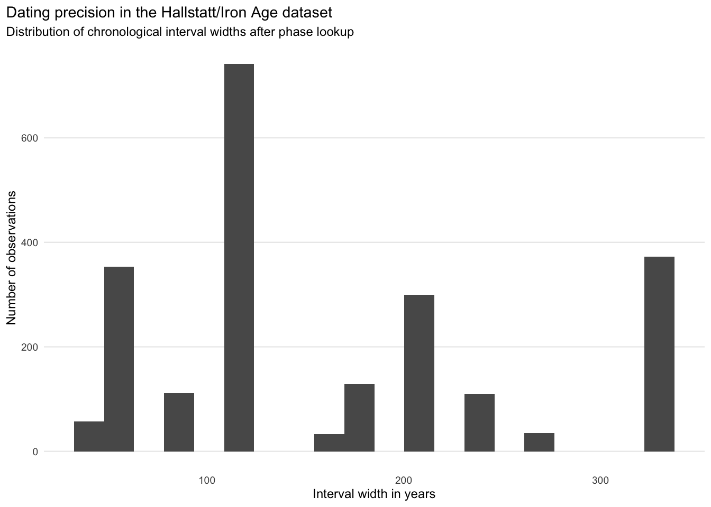
p_interval_counts <- interval_counts |>
mutate(interval_label = paste0(phase, " (", start, " to ", end_label, ")"),
interval_label = reorder(interval_label, n)) |>
ggplot(aes(x = n, y = interval_label)) +
geom_col() +
labs(title = "Most frequent Hallstatt/Iron Age chronological intervals",
subtitle = "Phase labels and their mapped chronological ranges",
x = "Number of observations", y = NULL) +
plot_theme(base_size = 8)
p_interval_counts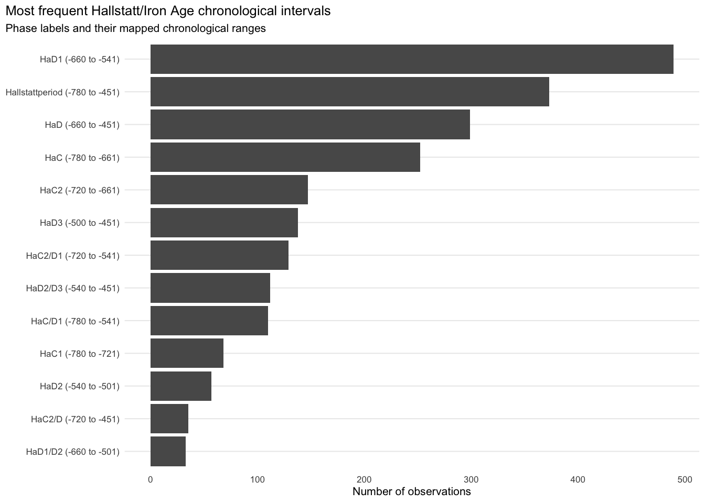
As in the simulations, the data are an uneven mixture of broad and narrow intervals, and the resulting curve may reflect past burial activity, the structure of the chronological attribution, or both.
For each year, we count how many unique chronological intervals cover that year. This gives the overlap structure of the empirical phase system. High values indicate parts of the chronology where many phase labels or dating ranges overlap.
overlap_curve <- count_phase_overlap(
phase_catalogue = empirical_intervals |>
transmute(from = start, to = end),
year_grid = year_grid
)
overlap_curve_binned <- bin_overlap_curve(
overlap_curve = overlap_curve, bin_width = bin_width, bin_start = time_min
)
write_csv(overlap_curve_binned, "outputs/s5_hallstatt_overlap_curve_binned.csv")p_overlap <- ggplot(overlap_curve_binned, aes(x = year, y = overlap)) +
geom_line(linewidth = 0.8) +
geom_point(size = 1.2) + coord_cartesian(ylim = c(0, 7)) +
labs(
title = "Empirical overlap structure of Hallstatt/Iron Age phase intervals",
subtitle = "Number of unique chronological intervals covering each time bin",
x = "\nYear BCE/CE",
y = "Mean number of overlapping intervals\n"
) +
plot_theme(base_size = 9)
p_overlap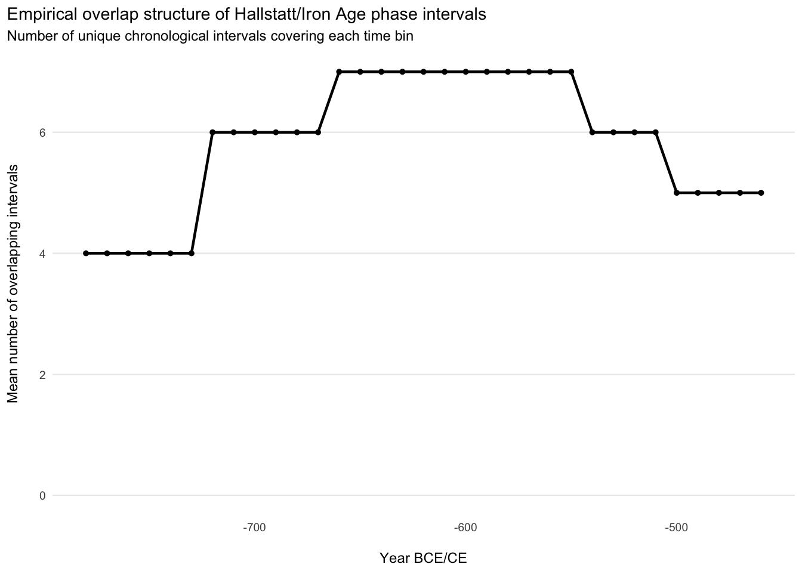
As in Supplement 4, the curve counts the distinct intervals covering a given time and says nothing about the number of burials. As shown in the previous supplements, where an empirical reconstruction tracks the overlap curve, part of the reconstructed trajectory may derive from the chronological classification instead from past activity.
The standard aoristic method distributes each observation uniformly across its assigned chronological interval.
standard_curve <- run_standard_aoristic(intervals = iron_age_events,
year_grid = year_grid)
standard_curve_binned <- standard_curve |>
make_reconstruction_binned(value_col = standard, output_col = "standard",
bin_width = bin_width, bin_start = time_min)
write_csv(standard_curve_binned,
"outputs/s5_hallstatt_standard_aoristic_binned.csv")For the Hallstatt/Iron Age burial data this produces a rather flat curve with some internal structure and a pronounced dip in 540–501 BCE. Many observations carry very wide dating intervals, so a substantial share of the evidence is smeared across long stretches of time. The curve records the distribution of datings as much as the number of observations.
p_standard <- ggplot(standard_curve_binned, aes(x = year, y = standard)) +
geom_line(colour = method_colours[["Standard aoristic"]], linewidth = 0.8,
na.rm = TRUE) +
labs(title = "Standard proportional aoristic reconstruction from the Hallstatt/Iron Age dataset",
subtitle = "Binned and normalised to sum to one", x = "Year BCE/CE",
y = "Normalised intensity") +
plot_theme(base_size = 9) + coord_cartesian(ylim = c(0, 0.04))
p_standard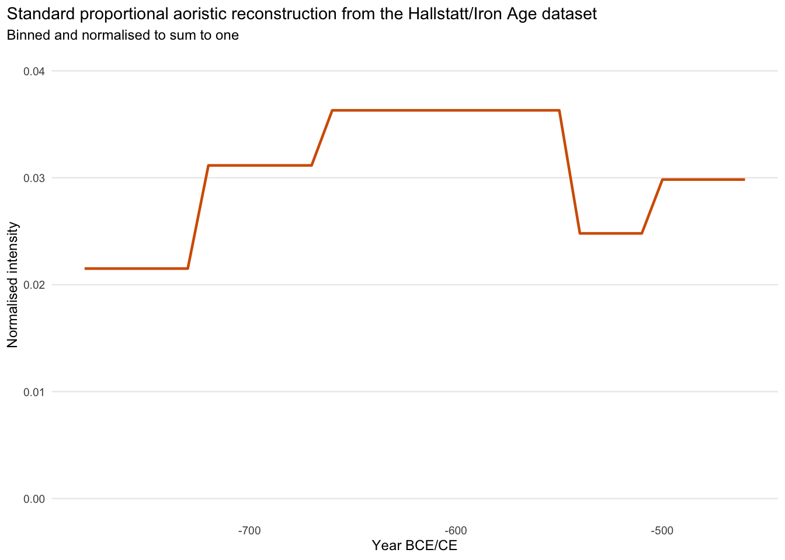
As in Supplements 2 and 4, the Monte Carlo reconstruction repeatedly samples one possible date for each observation from its assigned interval. It expresses uncertainty under the standard within-interval uniformity assumption.
mc_curve_binned <- run_monte_carlo_aoristic(
intervals = iron_age_events,
year_grid = year_grid,
bin_width = bin_width,
bin_start = time_min,
n_iter = n_mc,
seed = 52001
)
write_csv(mc_curve_binned, "outputs/s5_hallstatt_monte_carlo_binned.csv")Setting the uncertainty envelope aside, the Monte Carlo reconstruction is nearly identical to the simple proportional one, as the simulations led us to expect.
p_mc <- ggplot(mc_curve_binned, aes(x = year)) +
geom_ribbon(aes(ymin = mc_q05, ymax = mc_q95), alpha = 0.20, na.rm = TRUE) +
geom_line(aes(y = mc_mean), colour = method_colours[["Monte Carlo mean"]],
linewidth = 0.8, na.rm = TRUE) +
labs(
title = "Monte Carlo aoristic uncertainty for the Hallstatt/Iron Age dataset",
subtitle = paste0("Ribbon: 5th to 95th percentile interval across ", n_mc, " iterations"),
x = "Year BCE/CE",
y = "Normalised intensity"
) +
plot_theme(base_size = 9) + coord_cartesian(ylim = c(0, 0.05))
p_mc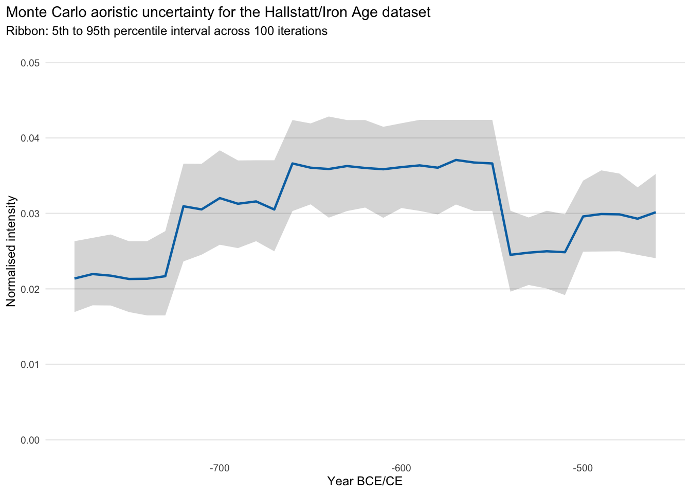
The phase-corrected method reduces the weight assigned to years covered by many overlapping chronological intervals.
phase_corrected_curve <- run_phase_corrected_aoristic(
intervals = iron_age_events, year_grid = year_grid
)
phase_corrected_curve_binned <- phase_corrected_curve |>
make_reconstruction_binned(value_col = phase_corrected,
output_col = "phase_corrected",
bin_width = bin_width, bin_start = time_min)
write_csv(phase_corrected_curve_binned,
"outputs/s5_hallstatt_phase_corrected_binned.csv")The phase-corrected curve departs substantially from the others. Its correlation with the standard aoristic curve is 0.894, and here too part of the probability is moved between periods. Where the two differ, the interpretation depends on the method.
p_phase_corrected <- phase_corrected_curve_binned |>
inner_join(standard_curve_binned, by = "year") |>
ggplot(aes(x = year)) +
geom_line(aes(y = standard), colour = "grey60", linetype = "dashed",
linewidth = 0.6, na.rm = TRUE) +
geom_line(aes(y = phase_corrected),
colour = method_colours[["Phase-corrected"]], linewidth = 0.8,
na.rm = TRUE) +
labs(
title = "Phase-corrected aoristic reconstruction for the Hallstatt/Iron Age dataset",
subtitle = "Binned and normalised to sum to one; dashed grey line: standard reconstruction for reference",
x = "Year BCE/CE",
y = "Normalised intensity"
) +
plot_theme(base_size = 9) + coord_cartesian(ylim = c(0, 0.04))
p_phase_corrected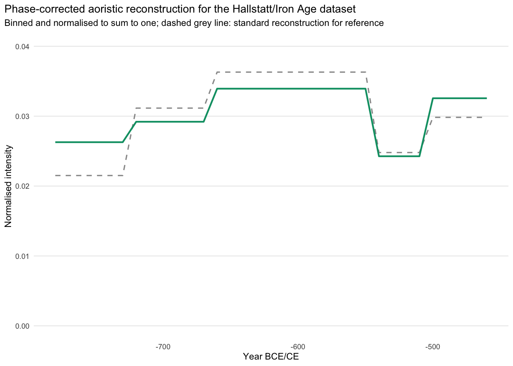
As in Supplement 4 for the Danish data, the Bayesian reconstruction of the Hallstatt data with Baorista (Crema 2025) is evaluated under four exponential priors for the ICAR scale parameter, with rates of 1, 10, 50 and 100. All four are fitted to the same 2,242 records (13 unique intervals) in 10-year blocks, with the MCMC settings of Supplement 4. The panels show the posterior mean with pointwise 95% credible intervals. The method comparisons below use the posterior median of the fit with rate 1.
if (!all(file.exists(c(baorista_posterior_files, baorista_diagnostics_files)))) {
stop("Run scripts/run_s5_baorista_sensitivity.sh first.")
}
baorista_sensitivity_posterior <- map_dfr(baorista_rates, function(rate) {
read_csv(baorista_posterior_files[[as.character(rate)]], show_col_types = FALSE) |>
mutate(sigma_prior_rate = rate, sigma_prior = paste0("dexp(rate=", rate, ")"))
})
baorista_sensitivity_diagnostics <- map_dfr(baorista_rates, function(rate) {
read_csv(baorista_diagnostics_files[[as.character(rate)]], show_col_types = FALSE) |>
mutate(sigma_prior_rate = rate)
}) |>
filter(diagnostic %in% c("max_rhat", "median_rhat", "min_ess", "median_ess",
"n_posterior_samples", "niter", "n_attempts", "converged")) |>
mutate(value = as.numeric(value)) |>
select(sigma_prior_rate, diagnostic, value) |>
pivot_wider(names_from = diagnostic, values_from = value) |>
arrange(sigma_prior_rate)
baorista_sensitivity_diagnostics |>
transmute(`Prior rate` = as.character(sigma_prior_rate),
`Max R-hat` = formatC(max_rhat, format = "f", digits = 3),
`Median R-hat` = formatC(median_rhat, format = "f", digits = 3),
`Min ESS` = format(round(min_ess), big.mark = ","),
`Median ESS` = format(round(median_ess), big.mark = ","),
Draws = format(n_posterior_samples, big.mark = ","),
Iterations = format(niter, big.mark = ","),
Attempts = n_attempts,
Converged = if_else(converged == 1, "yes", "no")) |>
kbl(align = "lrrrrrrrr")| Prior rate | Max R-hat | Median R-hat | Min ESS | Median ESS | Draws | Iterations | Attempts | Converged |
|---|---|---|---|---|---|---|---|---|
| 1 | 1.023 | 1.004 | 310 | 1,602 | 2,000 | 50,000 | 1 | yes |
| 10 | 1.016 | 1.003 | 1,351 | 1,777 | 2,000 | 50,000 | 1 | yes |
| 50 | 1.011 | 1.001 | 1,262 | 2,000 | 2,000 | 50,000 | 1 | yes |
| 100 | 1.010 | 1.003 | 1,459 | 1,812 | 2,000 | 50,000 | 1 | yes |
p_baorista_sensitivity <- baorista_sensitivity_posterior |>
mutate(sigma_prior = factor(sigma_prior,
levels = paste0("dexp(rate=", baorista_rates, ")"))) |>
ggplot(aes(x = year, y = baorista_mean)) +
geom_ribbon(aes(ymin = baorista_q025, ymax = baorista_q975), alpha = 0.18) +
geom_line(linewidth = 0.8) +
facet_wrap(vars(sigma_prior), ncol = 2, scales = "free_y") +
labs(title = "Hallstatt/Iron Age data: Baorista prior-sensitivity analysis",
subtitle = "Posterior mean and pointwise 95% credible interval",
x = "Year BCE/CE", y = "Posterior probability") +
plot_theme(base_size = 9)
p_baorista_sensitivity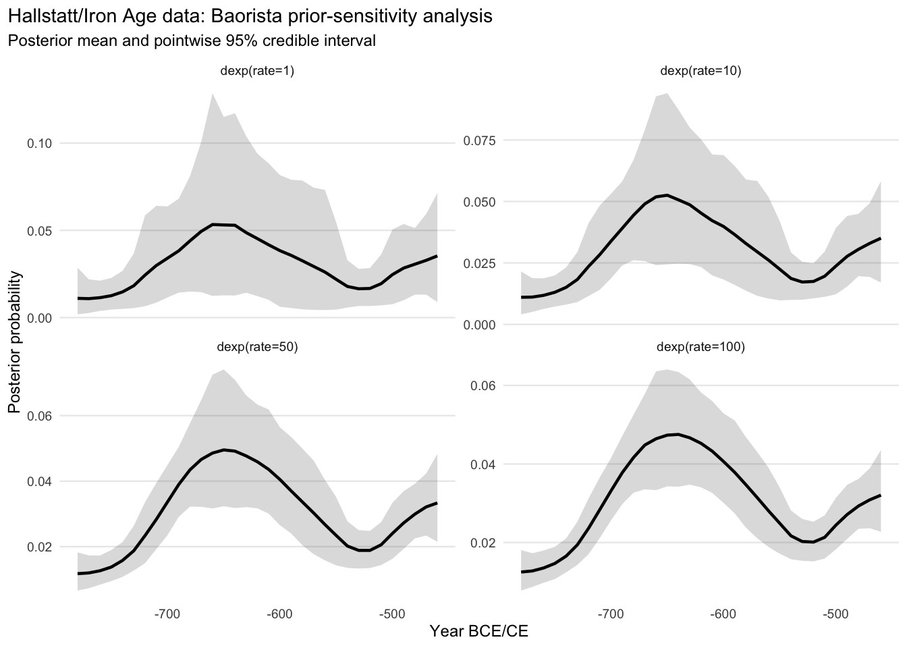
All four fits reached the convergence criterion in the first attempt (Table 3). As in the Danish data, the prior affects amplitude and smoothness but not the shape of the posterior (Figure 7). In all four fits, the posterior median reaches its maximum in 650–631 BCE, at the beginning of HaD1, where the overlap curve reaches its maximum and most labels meet. The reconstruction thus concentrates probability where many intervals intersect, as expected for likelihood-based estimates on interval-censored data (Turnbull 1976). It also reproduces the low density in HaD2 and the rise in HaD3 seen in the aoristic reconstructions.
curves_binned <- overlap_curve_binned |>
left_join(standard_curve_binned, by = "year") |>
left_join(
mc_curve_binned |>
select(year, mc_mean, mc_median, mc_q05, mc_q95),
by = "year"
) |>
left_join(phase_corrected_curve_binned, by = "year") |>
left_join(
read_csv(baorista_posterior_files[[as.character(baorista_reference_rate)]],
show_col_types = FALSE) |>
select(year, baorista_median, baorista_q025, baorista_q975),
by = "year"
) |>
mutate(overlap = replace_na(overlap, 0),
standard = normalise_curve(replace_na(standard, 0)),
mc_mean = normalise_curve(replace_na(mc_mean, 0)),
mc_median = normalise_curve(replace_na(mc_median, 0)),
phase_corrected = normalise_curve(replace_na(phase_corrected, 0)),
baorista_median = replace_na(baorista_median, 0),
baorista_q025 = replace_na(baorista_q025, 0),
baorista_q975 = replace_na(baorista_q975, 0))
write_csv(curves_binned,
"outputs/s5_hallstatt_reconstruction_curves_binned.csv")Without ground truth, we quantify the association between each reconstruction and the empirical overlap structure.
overlap_diagnostics <- curves_binned |>
select(overlap, standard, mc_mean, phase_corrected, baorista_median) |>
summarise(standard = safe_cor(overlap, standard),
mc_mean = safe_cor(overlap, mc_mean),
phase_corrected = safe_cor(overlap, phase_corrected),
baorista_median = safe_cor(overlap, baorista_median)) |>
pivot_longer(cols = everything(), names_to = "method",
values_to = "overlap_curve_correlation") |>
mutate(
method = recode(method, standard = "Standard aoristic",
mc_mean = "Monte Carlo mean",
phase_corrected = "Phase-corrected",
baorista_median = "Baorista posterior median")
) |>
arrange(desc(abs(overlap_curve_correlation))) |>
mutate(
overlap_relative_amplitude = map_dbl(
method,
~ overlap_relative_amplitude(
curves_binned[[c("Standard aoristic" = "standard",
"Monte Carlo mean" = "mc_mean",
"Phase-corrected" = "phase_corrected",
"Baorista posterior median" = "baorista_median")[[.x]]]],
curves_binned$overlap
)
)
)
write_csv(overlap_diagnostics, "outputs/s5_hallstatt_overlap_diagnostics.csv")
overlap_diagnostics |>
select(method, overlap_curve_correlation, overlap_relative_amplitude) |>
kbl(
digits = 3,
col.names = c("Method", "Correlation with overlap", "Overlap-aligned relative amplitude")
)| Method | Correlation with overlap | Overlap-aligned relative amplitude |
|---|---|---|
| Standard aoristic | 0.887 | 0.163 |
| Monte Carlo mean | 0.885 | 0.163 |
| Baorista posterior median | 0.650 | 0.278 |
| Phase-corrected | 0.610 | 0.073 |
p_overlap_correlation <- overlap_diagnostics |>
mutate(method = reorder(method, abs(overlap_curve_correlation))) |>
ggplot(aes(x = overlap_curve_correlation, y = method)) +
geom_col() +
geom_vline(xintercept = 0, linewidth = 0.4) +
labs(
title = "Hallstatt data: reconstructions and phase overlap",
subtitle = "Correlation between each method and the empirical overlap curve",
x = "\nCorrelation with overlap structure",
y = NULL
) +
plot_theme(base_size = 9)
p_overlap_correlation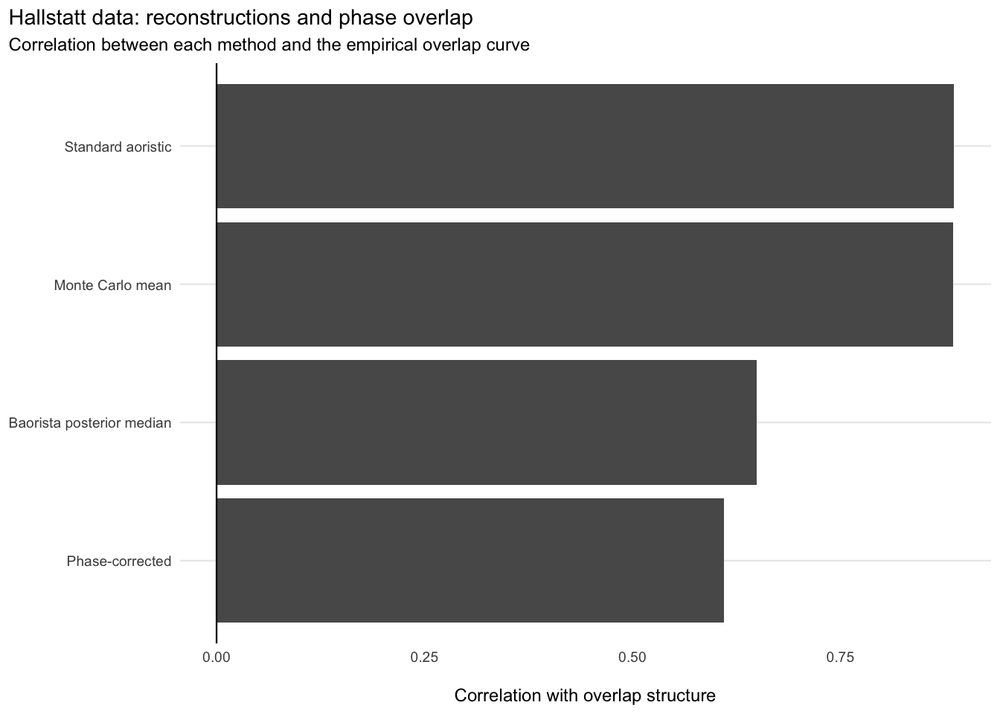
The standard proportional result correlates with the empirical overlap curve at 0.887 and the Monte Carlo result at 0.885. The phase-corrected reconstruction drops to 0.610, with the Baorista posterior median between the two at 0.650. As in the Danish data, the lower correlation of Baorista does not imply weaker coupling, as its overlap-aligned amplitude shows below.
Where a reconstruction follows the overlap curve closely, it may be partly driven by the chronological classification.
plot_overlap_methods <- curves_binned |>
mutate(overlap_scaled = normalise_curve(overlap)) |>
select(year, Overlap_structure = overlap_scaled, Standard_aoristic = standard,
Monte_Carlo_mean = mc_mean, Phase_corrected = phase_corrected,
Baorista_posterior_median = baorista_median) |>
pivot_longer(cols = -year, names_to = "method", values_to = "value") |>
mutate(
method = recode(method, Overlap_structure = "Overlap structure",
Standard_aoristic = "Standard aoristic",
Monte_Carlo_mean = "Monte Carlo mean",
Phase_corrected = "Phase-corrected",
Baorista_posterior_median = "Baorista posterior median"),
method = factor(method, levels = c("Overlap structure", names(method_colours)))
)
overlap_colours <- c("Overlap structure" = "black", method_colours)
overlap_linetypes <- c("Overlap structure" = "dotted", method_linetypes)
p_overlap_methods <- ggplot(
plot_overlap_methods,
aes(x = year, y = value, colour = method, linetype = method)
) +
geom_ribbon(data = curves_binned,
aes(x = year, ymin = baorista_q025, ymax = baorista_q975),
inherit.aes = FALSE, fill = "#CC79A7", alpha = 0.08) +
geom_line(linewidth = 0.8, na.rm = TRUE) +
scale_colour_manual(values = overlap_colours, drop = FALSE) +
scale_linetype_manual(values = overlap_linetypes, drop = FALSE) +
labs(title = "Hallstatt/Iron Age data: reconstruction methods and empirical phase-overlap structure",
subtitle = "All curves are normalised for visual comparison; shaded: Baorista 95% credible interval",
x = "\nYear BCE/CE", y = "Normalised value\n") +
plot_theme(base_size = 9)
p_overlap_methods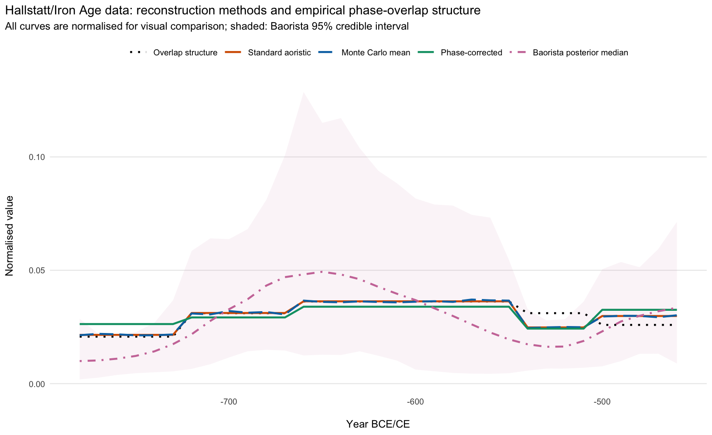
Standard and Monte Carlo overlap almost perfectly (Figure 9). The phase-corrected curve shifts the relative weight of several periods while keeping much of the broad trajectory.
The curves differ most at the beginning and end of the Hallstatt period. These sections are sensitive to the combined effect of reconstruction method and chronological classification and should not be read directly as demographic events.
In the earlier part of the sequence, the phase-corrected curve tends to be lower where overlap is high, in the later part it does not. An exact correction would leave no relationship with the overlap curve, so a negative local relationship reflects either a real signal that runs against the catalogue or overcompensation. Since label use in these data is much closer to equal choice than in the Danish case (Supplement 6), overcompensation should be small here, but this comparison alone cannot separate the two.
ggsave("figures/s5_hallstatt_methods_vs_overlap.png", p_overlap_methods,
width = 8.5, height = 5.2, dpi = 600)The difference between each normalised reconstruction and the normalised overlap curve shows where along the sequence the reconstructions depart from the catalogue (Figure 10). A reconstruction that only reproduced the catalogue would stay close to zero throughout. The standard and Monte Carlo curves do so except in HaD2 and HaD3. The phase-corrected curve lies above the overlap curve in the earliest Hallstatt phases and below it in HaD1, where most labels overlap. Baorista departs most, with low values at the beginning of the sequence and a pronounced excess around its maximum in HaD1.
p_deviation <- curves_binned |>
mutate(overlap_scaled = normalise_curve(overlap)) |>
transmute(year,
`Standard aoristic` = standard - overlap_scaled,
`Monte Carlo mean` = mc_mean - overlap_scaled,
`Phase-corrected` = phase_corrected - overlap_scaled,
`Baorista posterior median` = baorista_median - overlap_scaled) |>
pivot_longer(-year, names_to = "method", values_to = "deviation") |>
mutate(method = factor(method, levels = names(method_colours))) |>
ggplot(aes(x = year, y = deviation, colour = method, linetype = method)) +
geom_hline(yintercept = 0, linewidth = 0.3) +
geom_line(linewidth = 0.8, na.rm = TRUE, show.legend = FALSE) +
facet_wrap(vars(method), ncol = 2) +
scale_colour_manual(values = method_colours) +
scale_linetype_manual(values = method_linetypes) +
labs(title = "Hallstatt/Iron Age data: deviation of the reconstructions from the overlap structure",
subtitle = "Normalised reconstruction minus normalised overlap curve",
x = "Year BCE/CE", y = "Difference in normalised density") +
plot_theme(base_size = 9)
p_deviation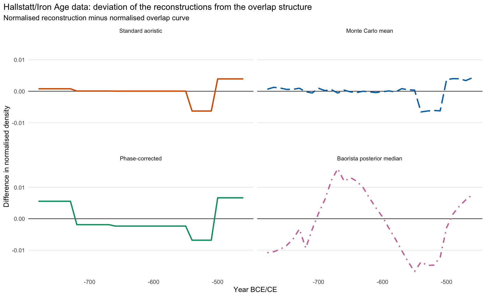
As in Supplements 2 and 4, we complement the correlations with the overlap-aligned relative amplitude, \(|\beta| \cdot \mathrm{sd}(\lambda) / \bar R\), with \(\beta\) the slope of the reconstruction on the overlap curve: the change in reconstructed density, as a fraction of the mean density, when the overlap increases by one standard deviation (see Supplement 2). All curves are normalised to the same total, so the values are comparable across methods.
s5_strength <- overlap_diagnostics |>
select(method, overlap_curve_correlation, overlap_relative_amplitude)
amp <- function(m) s5_strength$overlap_relative_amplitude[s5_strength$method == m]For the standard reconstruction, the density rises by about 16% of the mean per standard deviation of overlap, for the phase-corrected reconstruction by about 7%, and for the Baorista posterior median by about 28%.
p_overlap_scatter <- plot_overlap_scatter(
curves = curves_binned,
method_cols = c("standard", "mc_mean", "phase_corrected", "baorista_median"),
method_labels = c(standard = "Standard aoristic",
mc_mean = "Monte Carlo mean",
phase_corrected = "Phase-corrected",
baorista_median = "Baorista posterior median"),
colours = method_colours
) +
labs(title = "Hallstatt/Iron Age data: reconstructed density against phase overlap")
p_overlap_scatter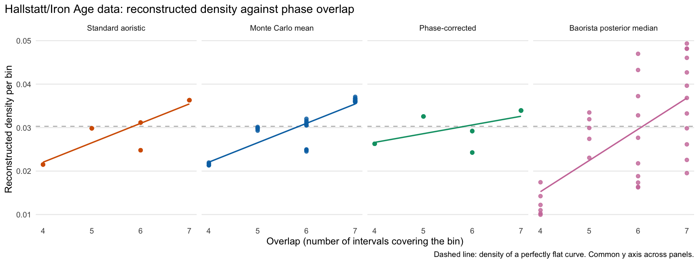
Because there is no known ground truth, we evaluate how strongly the methods differ from one another.
method_matrix <- curves_binned |>
select(standard, mc_mean, phase_corrected, baorista_median)
pairwise_method_correlations <- cor(method_matrix,
use = "pairwise.complete.obs") |>
as.data.frame() |>
rownames_to_column("method_1") |>
pivot_longer(cols = -method_1, names_to = "method_2",
values_to = "correlation") |>
mutate(
method_1 = recode(method_1, standard = "Standard aoristic",
mc_mean = "Monte Carlo mean",
phase_corrected = "Phase-corrected",
baorista_median = "Baorista posterior median"),
method_2 = recode(method_2, standard = "Standard aoristic",
mc_mean = "Monte Carlo mean",
phase_corrected = "Phase-corrected",
baorista_median = "Baorista posterior median")
)
write_csv(pairwise_method_correlations,
"outputs/s5_hallstatt_pairwise_method_correlations.csv")pairwise_method_distances <- expand_grid(
method_1 = names(method_matrix), method_2 = names(method_matrix)
) |>
mutate(
rmsd = map2_dbl(method_1, method_2,
~ rmsd(method_matrix[[.x]], method_matrix[[.y]])),
mae = map2_dbl(method_1, method_2,
~ mae(method_matrix[[.x]], method_matrix[[.y]])),
method_1 = recode(method_1, standard = "Standard aoristic",
mc_mean = "Monte Carlo mean",
phase_corrected = "Phase-corrected",
baorista_median = "Baorista posterior median"),
method_2 = recode(method_2, standard = "Standard aoristic",
mc_mean = "Monte Carlo mean",
phase_corrected = "Phase-corrected",
baorista_median = "Baorista posterior median")
)pairwise_labels <- c("Standard aoristic" = "Standard",
"Monte Carlo mean" = "Monte Carlo",
"Phase-corrected" = "Phase-corrected",
"Baorista posterior median" = "Baorista")
pairwise_order <- names(pairwise_labels)
pairwise_table <- matrix("–", nrow = length(pairwise_order),
ncol = length(pairwise_order),
dimnames = list(pairwise_labels, pairwise_labels))
for (i in seq_along(pairwise_order)) {
for (j in seq_along(pairwise_order)) {
if (i > j) {
pairwise_table[i, j] <- formatC(
pairwise_method_correlations$correlation[
pairwise_method_correlations$method_1 == pairwise_order[i] &
pairwise_method_correlations$method_2 == pairwise_order[j]
],
format = "f", digits = 3
)
} else if (i < j) {
pairwise_table[i, j] <- formatC(
1000 * pairwise_method_distances$rmsd[
pairwise_method_distances$method_1 == pairwise_order[i] &
pairwise_method_distances$method_2 == pairwise_order[j]
],
format = "f", digits = 2
)
}
}
}
kbl(pairwise_table, align = "rrrr")| Standard | Monte Carlo | Phase-corrected | Baorista | |
|---|---|---|---|---|
| Standard | – | 0.36 | 2.84 | 8.86 |
| Monte Carlo | 0.998 | – | 2.85 | 8.96 |
| Phase-corrected | 0.894 | 0.892 | – | 10.26 |
| Baorista | 0.769 | 0.757 | 0.676 | – |
The Monte Carlo mean and the standard aoristic result are numerically almost the same curve. The phase-corrected reconstruction stays recognisably related to both, but RMSD shows it moving a substantial amount of probability between periods.
The Hallstatt burial data again show that how much the phase correction changes the standard reconstruction depends on the distribution of phase labels and on the overlap structure of their intervals.
Standard and Monte Carlo aoristics share a central tendency because they share the within-interval uniformity assumption. The phase correction changes the relative prominence of several periods. Its much lower correlation with the overlap curve and its smaller overlap-aligned amplitude indicate that the standard reconstruction is partly structured by the intervals, as in the simulations. Baorista correlates less closely with the overlap curve than the standard reconstruction, but its overlap-aligned amplitude is the largest of all methods, and it concentrates probability where most labels meet, as in the Danish data. Since all Baorista fits converged here, this cannot be attributed to the sampling.
In HaD2 (540–501 BCE), all reconstructions lie below the overlap curve, and in HaD3 (500–451 BCE) above it. Since this deviation persists after the correction, overlap is not the only issue. Interval-based reconstructions are also sensitive to the absolute duration and placement of the ranges they are given, and the pattern would fit a HaD2 that was considerably shorter, and a HaD3 correspondingly longer, than the phase boundaries used here assume.
The limits of the comparison are those of any empirical test without ground truth. The case study cannot show that the corrected curve is the true trajectory of burial activity. As in the Danish case study, however, the comparison identifies those periods in which an interpretation depends on the classification and the method.
The conclusions of Supplement 4 apply here with fewer reservations. Label use is close to equal choice, and the standard reconstruction is strongly coupled to the overlap structure, so the corrected curve is in our view the better-founded estimate. Where the two differ in parts of the sequence in which the true signal may plausibly be concentrated, both should be reported and the difference discussed.
sessionInfo()R version 4.5.3 (2026-03-11)
Platform: aarch64-apple-darwin20
Running under: macOS 27.2
Matrix products: default
BLAS: /Library/Frameworks/R.framework/Versions/4.5-arm64/Resources/lib/libRblas.0.dylib
LAPACK: /Library/Frameworks/R.framework/Versions/4.5-arm64/Resources/lib/libRlapack.dylib; LAPACK version 3.12.1
locale:
[1] en_US.UTF-8/en_US.UTF-8/en_US.UTF-8/C/en_US.UTF-8/en_US.UTF-8
time zone: Europe/Berlin
tzcode source: internal
attached base packages:
[1] stats graphics grDevices datasets utils methods base
other attached packages:
[1] knitr_1.50 rlang_1.3.0 readr_2.1.6 tibble_3.3.1 purrr_1.2.0
[6] ggplot2_4.0.3 tidyr_1.3.1 dplyr_1.2.1
loaded via a namespace (and not attached):
[1] Matrix_1.7-4 bit_4.6.0 gtable_0.3.6 jsonlite_2.0.0
[5] crayon_1.5.3 compiler_4.5.3 renv_1.2.0 tidyselect_1.2.1
[9] parallel_4.5.3 splines_4.5.3 scales_1.4.0 yaml_2.3.12
[13] fastmap_1.2.0 lattice_0.22-9 R6_2.6.1 labeling_0.4.3
[17] generics_0.1.4 rbibutils_2.4.1 pillar_1.11.1 RColorBrewer_1.1-3
[21] tzdb_0.5.0 xfun_0.54 S7_0.2.2 bit64_4.6.0-1
[25] cli_3.6.6 mgcv_1.9-4 withr_3.0.3 magrittr_2.0.5
[29] Rdpack_2.6.6 digest_0.6.39 grid_4.5.3 vroom_1.6.7
[33] hms_1.1.4 nlme_3.1-168 lifecycle_1.0.5 aoristAAR_0.1.1
[37] vctrs_0.7.3 evaluate_1.0.5 glue_1.8.1 farver_2.1.2
[41] rmarkdown_2.30 tools_4.5.3 pkgconfig_2.0.3 htmltools_0.5.9